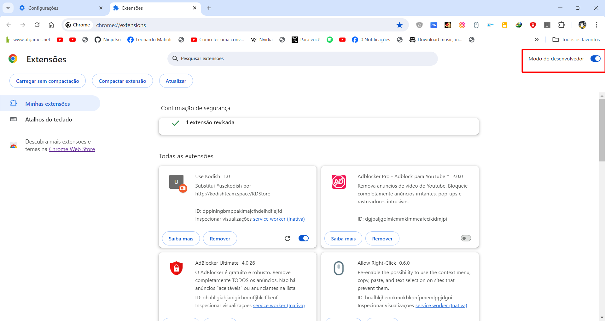

.::::: Tutorial :::::.
1) Digite esse link para abrir aba de extensões: chrome://extensions/
2) Ao abrir essa tela, procure o modo desenvolvedor
3) Ative o modo desenvolvedor
4) Deve ficar igual à imagem abaixo

5) Clique em Carregar sem compactação
6) Extraia a extensão, procure a pasta da extensão e clique em Selecionar Pasta
7) Após isso, a extensão deve aparecer no menu de extensões
Extensão desoculta os links da Kodish